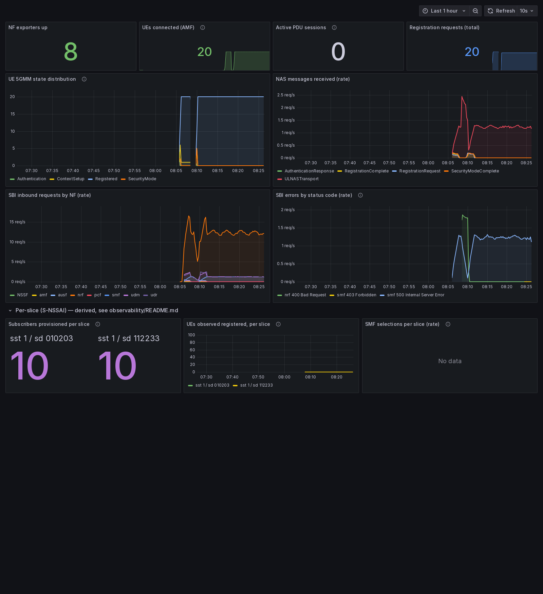
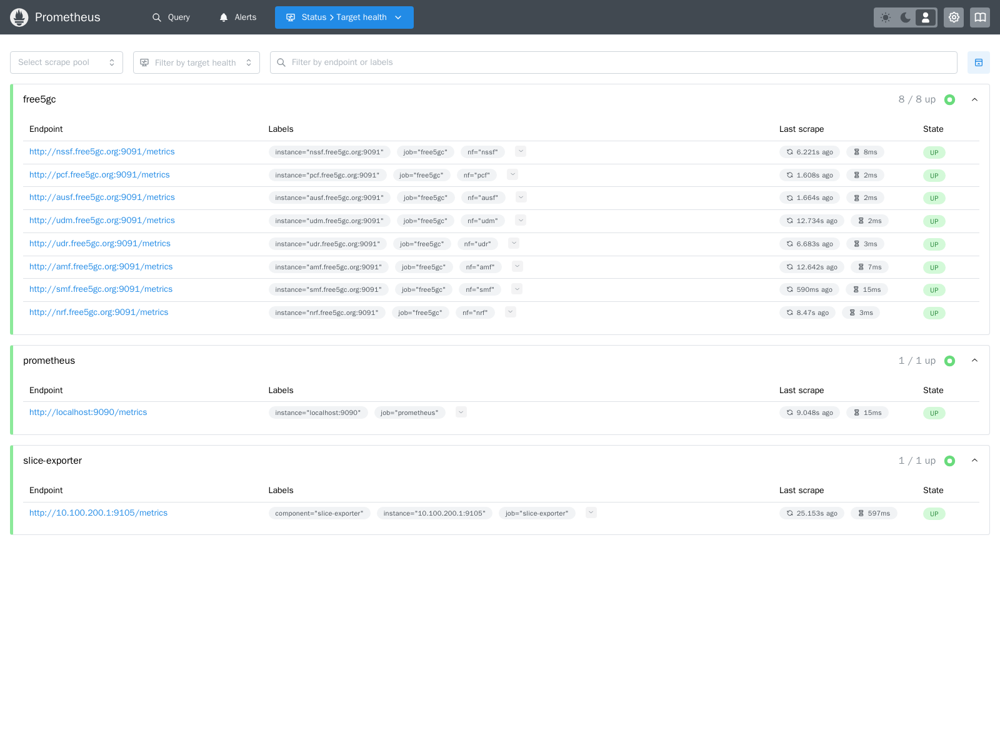
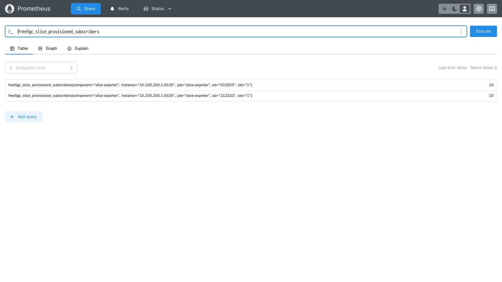

A working 5G core network with 20 devices, two network slices, and live monitoring
| What we checked | Result | How we proved it |
|---|---|---|
| Software versions locked and reproducible | PASS | Deleted everything, re-downloaded — got byte-identical results |
| All core network functions running | 8 / 8 | Read the network's own registry database |
| Subscribers (SIM cards) provisioned | 20 | Database query |
| Devices connected to the network | 20 / 20 | Asked each device directly for its status |
| Both network slices selected correctly | PASS | 60 requests for each slice in the logs |
| Monitoring collecting data | 10 / 10 | Prometheus target page |
| Data traffic through the network | BLOCKED | Needs different hardware — explained in section 5 |
Eight "network functions" — think of them as specialised servers that each do one job. The AMF handles device connections, the AUSF and UDM check that a SIM card is genuine, the SMF sets up data sessions, and the NSSF decides which network slice a device belongs to. They find each other through a registry called the NRF, and all their settings live in version-controlled files.
A network slice is a way of splitting one physical network into separate virtual networks — so, for example, emergency services and normal customers can share hardware but stay isolated. We set up two real slices and split the devices between them:
| Slice | Identifier | Devices | Address range |
|---|---|---|---|
| Slice A | SST 1 / SD 010203 | 10 devices | 10.60.0.0/16 |
| Slice B | SST 1 / SD 112233 | 10 devices | 10.61.0.0/16 |
These are genuine 5G slices, not labels. Each device asks for its slice during connection, and the network's slice-selection function independently approves it.
Prometheus collects measurements every 15 seconds; Grafana draws the dashboards. It runs as a completely separate system that only reads from the 5G core — the core doesn't even know it's being watched, and monitoring can never interfere with the network.
Scripts handle: downloading exact software versions, checking the machine is suitable, setting up SIM cards, launching devices, collecting evidence, and running the test suite. A CI pipeline checks on every code change that nobody has quietly swapped a software version.



010203 and 10 on slice 112233.
free5GC cannot produce this by itself (see section 4) — we had to build it.
The biggest finding. We checked every single measurement free5GC produces — 629 of them — and found that none of them say which network slice they belong to.
That is a serious problem for this project, because the whole goal is to monitor networks per slice. Without slice labels you can see that the network is busy, but not which slice is busy. The project's design document had listed this as a risk; we confirmed it is real.
Our solution: the network's logs do mention the slice, even though the measurements don't. We wrote a small program that reads those logs, combines them with the subscriber database, and produces proper slice-tagged measurements — without modifying free5GC itself. Figure 3 is that solution working.
We found that free5GC's own device counters drift over time. Immediately after a clean start they are correct, but once connections fail and retry, they lose track and never recover:
| Source | After a clean start | After lots of retries |
|---|---|---|
| Asking each device directly (the truth) | 20 | 20 |
| free5GC's "connected devices" counter | 20 ✓ | 3 ✗ |
| free5GC's "connected state" counter | 20 ✓ | 63 ✗ |
Worth knowing before anyone builds alerts on those numbers. Our reports use the device's own answer as the source of truth.
"000001", not
the number 1 — otherwise it silently fails to match.The design asked for machine-readable (JSON) logs. We checked the source code: free5GC v4.2.3 simply doesn't offer that option. Recorded as a known limitation rather than modifying someone else's software.
The earlier version of this project appeared to do slice-based traffic handling. It didn't — it was a web app sorting requests with a lookup table and calling them "slices". The 5G core and the traffic simulator never talked to each other. The slicing in this project is real.
What works without it: everything that happens when a phone connects — authentication, security, slice selection, registration. That is the majority of a 5G core, and it is fully working here.
What doesn't: the data path. Devices connect successfully but cannot be given an IP address or send traffic. This is why "Active PDU sessions" reads 0 in Figure 1.
| Remaining item | Why it's blocked |
|---|---|
| Load the gtp5g kernel component | Needs a standard Linux machine |
| Establish data sessions / assign IPs | Depends on the above |
| Prove end-to-end connectivity (ping) | Depends on the above |
| Record final hardware versions | Must be captured on the target machine |
| Full rebuild-from-empty proof | Should be done with the data path present |
| Tag the finished baseline | Can't declare it finished while data doesn't flow |
Because of this, Phase 1 is deliberately not marked complete. The automated test suite enforces that honestly — it reports these items as "needs proper hardware" and refuses to say the project is finished. Running it on a suitable machine should turn them all green without code changes.
git clone https://github.com/RithvikReddy0-0/5g-observability.git cd 5g-observability bash scripts/verify_env.sh # is this machine suitable? bash scripts/bootstrap.sh # download exact software versions # start the core (details in docs/runbooks/clean-install.md) bash scripts/provision_subscribers.sh --delete-all COUNT=10 START=1 SD=010203 bash scripts/provision_subscribers.sh COUNT=10 START=11 SD=112233 bash scripts/provision_subscribers.sh COUNT=10 COUNT_B=10 TEMPO=600 bash scripts/start_ues.sh bash tests/acceptance.sh # run all the checks bash scripts/collect_evidence.sh
| Folder | Contents |
|---|---|
docs/RESULTS.md | All measured results in detail |
docs/evidence/ | Six timestamped raw-data captures |
docs/screenshots/ | The images in this report |
docs/runbooks/ | Step-by-step setup instructions |
docs/interfaces/ | Reference for every network connection type |
diagrams/ | Diagrams of how a device connects |
scripts/, tests/ | All automation and the test suite |
docs/evidence/, so any claim here can be checked
independently.